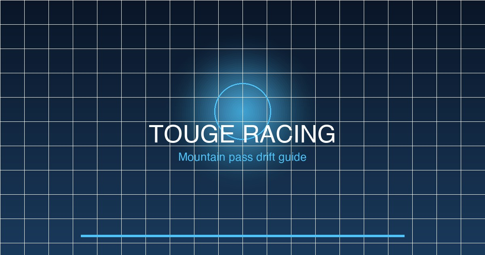

In This Guide
What is Touge Racing?
Touge (峠) is Japanese for "mountain pass" — narrow, winding roads that snake through mountain terrain. In Forza Horizon 6 Japan, touge events test your ability to maintain momentum through tight corners, manage weight transfer, and exploit the natural camber of mountain roads.
Unlike circuit racing where grip is consistent, touge demands constant adaptation: braking zones change with elevation, road surface varies from smooth asphalt to cracked concrete, and weather can shift from dry to rain within the same run.

Best Cars for Touge
The ideal touge car prioritizes balance, visibility and power delivery over raw horsepower. Weight is the enemy — a lighter car carries more momentum through corners and recovers from mistakes faster.
Best All-Round: Toyota AE86 Sprinter Trueno
The benchmark touge machine for good reason. Rear-wheel-drive, lightweight (2,400 lbs), and the perfect power-to-weight ratio for learning. 150-300hp is the sweet spot — more power and you'll spin instead of corner.
Best Drift Build: Nissan Silvia S15
SR20DET provides smooth, linear boost. The chassis responds predictably at the limit and the aftermarket support is massive. A 350-400hp S15 dominates touge without being twitchy.
Best Balanced: Mazda RX-7 FD
The 13B rotary delivers seamless power delivery and the front-midship layout gives perfect weight distribution. High skill ceiling but devastating at full send. 350-450hp is the range.
Underrated Pick: Honda Civic Type R (FK8)
FWD gets dismissed too quickly. The CTR's Limited-Slip Differential and aggressive geometry make it a weapon on tighter touge sections where its compact size is an advantage.
Control Technique
Before the Corner
- Brake in a straight line — never brake mid-corner. Weight transfer kills rotation.
- Trail braking: Light brake pressure while turning in. Feeds weight to front tires and extends the grip zone.
- Downshift before the apex — match revs to your target gear. Heel-toe if your car has a clutch.
Through the Corner
- Initial turn-in is sharp — Point the car where you want to go. Don't understeer in.
- Light throttle maintains grip — Too much and the rear steps out. Too little and you understeer wide.
- Add power to rotate — The AE86 naturally oversteers on throttle. Other cars need more input.
Corner Exit
- Get on throttle early — The sooner you accelerate, the faster your exit speed.
- Straighten the wheel — As grip returns, ease the steering angle.
- First gear for tight hairpins — S1 and S2 class cars need first or second for tight switchbacks.
Best Touge Pass Locations in FH6 Japan
Hakone Turn 7 — The Iconic Hairpin
The signature touge moment in FH6 Japan. Turn 7 is a tightening radius hairpin — entry speed determines your line. Too fast and you run wide. Too slow and you lose momentum for the hill climb.
Strategy: Apex late, hug the inside wall, then power up the short straight to Turn 8.
Mt. Fuji 5th Station Road
High elevation touge with stunning views. Watch for deteriorating road surface near the upper stations — more cracks, less grip. Best in morning before traffic.
Strategy: Comfortable entry speeds, smooth lines, preserve your tires for the descent.
Izu Peninsula Coast Road
Technical cliff-side touge with ocean views. Tight hairpins separated by short straights. Requires constant gear changes.
Strategy: Short-shift to stay in the power band. Every corner has an immediate straight.
Video Walkthrough
The video below demonstrates touge technique on the Hakone Pass course — from initial braking through the hairpin to the final corner exit.